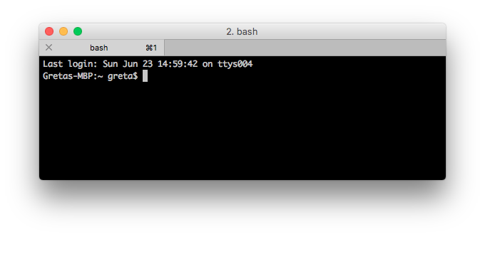
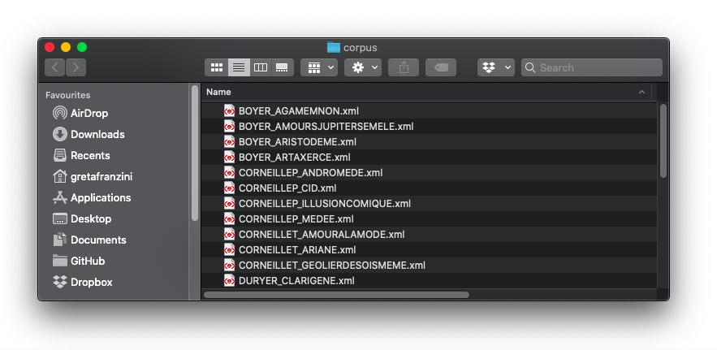

Practice
Encoder, Exploiter, Diffuser: Les humanités numériques dans les projets de recherche
University of Poitiers
12 February 2020
Twitter: #enexdi2020
Greta H. Franzini
Command line
Text preparation
Command line
Also known as TERMINAL in Unix systems.
A user interface to type commands directly to the machine
Command line
Why use it in NLP?
- Text/data preparation (with Regular Expressions)
- Regular Expressions (RegEx): sequence of characters identifying a search pattern
- Launching NLP tools (e.g. TreeTagger)
- Interaction with both small machines and servers
Text preparation
Test corpus
Normalised 17th century French drama (36 works, 8 authors)
Text preparation
Let's say we want to:
- prepare the text for lemmatisation and PoS-tagging
- run some preliminary calculations: total number of words (tokens), total number of unique words (types)
For our calculations and the use of many NLP tools, the corpus needs to meet these requirements:
- TXT format
- No XML markup
Text preparation
Download the corpus
- Download the corpus to a folder on the Desktop
- Study the files: what to keep and/or remove? E.g.:
- Preamble
- Table of contents
- Back matter
- ...
Text preparation
Text preparation
Move into the corpus directory
cd Desktop/corpusText preparation
Open a file
cat BOYER_AGAMEMNON.xmlText preparation
Merge all files into a single file
cat *.xml > corpus.xmlOpen the file. What do you notice?
Text preparation
No whitespaces in file names!
Text preparation
- ⇥ keyboard button to automatically complete the command
- ↑ and ↓ keyboard buttons to go through command history
Text preparation
Remove all XML tags from the file
cat corpus.xml | sed 's/\<[^<>]*\>//g' > corpus.txtOpen the file. What do you notice?
Text preparation
More manual and/or automatic cleaning depending on our needs
Text preparation
Open corpus.txt
cat corpus.txtText preparation
Delete punctuation
cat corpus.txt | tr -d '[:punct:]'Text preparation
Text as single column of words
cat corpus.txt | tr -d '[:punct:]' | tr '[:space:]' '\n'Text preparation
Remove blank lines
cat corpus.txt | tr -d '[:punct:]' | tr '[:space:]' '\n' | sed '/^\s*$/d'Text preparation
Save the file
cat corpus.txt | tr -d '[:punct:]' | tr '[:space:]' '\n' | sed '/^\s*$/d' > corpus-tokens.txtText preparation
UPPER CASE > lower case
cat corpus.txt | tr -d '[:punct:]' | tr '[:space:]' '\n' | sed '/^\s*$/d' | tr '[:upper:]' '[:lower:]'Text preparation
Sort words alphabetically
cat corpus.txt | tr -d '[:punct:]' | tr '[:space:]' '\n' | sed '/^\s*$/d' | tr '[:upper:]' '[:lower:]' | sortReverse sort
sort -rText preparation
Group duplicates in a single entry
cat corpus.txt | tr -d '[:punct:]' | tr '[:space:]' '\n' | sed '/^\s*$/d' | tr '[:upper:]' '[:lower:]' | sort | uniq -cText preparation
Count the number of unique words in the corpus
= lines in the file
cat corpus.txt | tr -d '[:punct:]' | tr '[:space:]' '\n' | sed '/^\s*$/d' | tr '[:upper:]' '[:lower:]' | sort | uniq -c | wc -lText preparation
Save results to a new file
cat corpus.txt | tr -d '[:punct:]' | tr '[:space:]' '\n' | sed '/^\s*$/d' | tr '[:upper:]' '[:lower:]' | sort | uniq -c > corpus-types.txt
TreeTagger
Lemmatisation and
Part-of-Speech tagging
TreeTagger
Mac OSX and Linux instructions
- Download the tagger package for your system to the Desktop, extract the zip and rename the folder to treetagger
- Download tagger-scripts.tar.gz to the Desktop folder. Extract, copy and paste its contents in the main treetagger folder, overwriting the cmd subfolder
- Download the install-tagger.sh to the treetagger folder
- Download the two French parameter files french.par and old-french.par to the folder treetagger/lib and extract their contents
TreeTagger
Windows instructions - see TXT file provided
TreeTagger
Add text/corpus to the main treetagger folder as a clean raw text file
In our case, the text file is corpus-tokens.txt
TreeTagger
Open the command line and navigate to Desktop/treetagger
to tag a text with the french.par parameter:
cat corpus-tokens.txt | cmd/tree-tagger-french > corpus.taggedto tag a text with the old-french.par parameter:
cat corpus-tokens.txt | cmd/tree-tagger-old-french > corpus.taggedTreeTagger
Open the corpus.tagged file with cat
Three columns:
form PoS lemmaTreeTagger
Tagging accuracy
- unknowns
- Any recurring error? What's the most problematic PoS? (hint: sort -k 2 )
- Count the unknowns over the entire file to determine the percentage of accuracy (hint: grep 'unknown' )
- Correct using the appropriate tag from the parameter's tag-set
- Other tagging errors?
- When correcting these, it's good practice to keep a list of the corrections to provide accuracy rates
Command line
Lexical richness
Lexical richness
Clean and remove XML markup from the file BOYER_AGAMEMNON.xml, saving the output to a BOYER_AGAMEMNON.txt file.
Lexical richness
Next, open BOYER_AGAMEMNON.txt
cat BOYER_AGAMEMNON.txtLexical richness
Lower case the text
tr '[:upper:]' '[:lower:]'
cat BOYER_AGAMEMNON.txt | tr '[:upper:]' '[:lower:]'Lexical richness
Transform punctuation in new lines:
tr '[:punct:]' '\n'
cat BOYER_AGAMEMNON.txt | tr '[:upper:]' '[:lower:]' | tr '[:punct:]' '\n'Lexical richness
Transform white spaces in new lines:
tr '[:space:]' '\n'
cat BOYER_AGAMEMNON.txt | tr '[:upper:]' '[:lower:]' | tr '[:punct:]' '\n' | tr '[:space:]' '\n'Lexical richness
Remove blank lines:
sed '/^\s*$/d'
cat BOYER_AGAMEMNON.txt | tr '[:upper:]' '[:lower:]' | tr '[:punct:]' '\n' | tr '[:space:]' '\n' | sed '/^\s*$/d'Lexical richness
Save results to a new file:
> BOYER_AGAMEMNON.txt.tokens
cat BOYER_AGAMEMNON.txt | tr '[:upper:]' '[:lower:]' | tr '[:punct:]' '\n' | tr '[:space:]' '\n' | sed '/^\s*$/d' > BOYER_AGAMEMNON.txt.tokensLexical richness
Calculate the total number of tokens:
wc -l BOYER_AGAMEMNON.txt.tokens
wc -l BOYER_AGAMEMNON.txt.tokensLexical richness
Open the token file:
cat BOYER_AGAMEMNON.txt.tokensLexical richness
Order tokens alphabetically:
sort
cat BOYER_AGAMEMNON.txt.tokens | sortLexical richness
Group duplicates into a single entry:
uniq -c
cat BOYER_AGAMEMNON.txt.tokens | sort | uniq -cLexical richness
Save resuls to a new file:
> BOYER_AGAMEMNON.txt.types
cat BOYER_AGAMEMNON.txt.tokens | sort | uniq -c > BOYER_AGAMEMNON.txt.typesLexical richness
Calculate the total number of types:
wc -l BOYER_AGAMEMNON.txt.types
wc -l BOYER_AGAMEMNON.txt.typesLexical richness
Calculate the Token/Type Ratio (TTR):
(Types/Tokens) * 100 = N%
Lexical richness
"Degrees" of TTR
What is a low/medium/high richness?
Lexical richness
Quiz
- Two literal portuguese translations of Pride and Prejudice
- An exact/plagiarised copy of a text
What do you expect their TTR will be?
Resources
RegEx Tutorials
Various
Other commands
grep
cat file.txt | grep "ciao"grep
cat file.txt | grep "'window'"Invert matching with grep
Trova tutte le voci/righe che non contengono una stringa di testo o elemento.
cat file.txt | grep -v "agg."Trova tutto quello che non contiene la parola agg. (-v inverte i risultati)
Per cercare più elementi, aggiungere una -e al comando:
cat file.txt | grep -v -e "agg." -e "avv." -e "v." -e "indef." ...Lookahead
\t(?=[a-z]): lookahead command matching a tab that is followed by text
Mixed commands
- \t(?!,): lookahead command matching tabs not followed by a comma; the
?!operator is a negation (?<=[0-9])\t: lookbehind command matching a tab that is preceeded by a number\w*matches all words/text (not numbers)egrep 'hello there' filenameto search for a specific string of texttail filenameto return the last 10 lines of the filetail -20 filenameto return the last 20 lines of the filehead filenameto return the first 10 lines of the filehead -20 filenameto return the first 20 lines of the filetopto view all running processes on a machinedf"Disk Free", to reveal amount of storage space in the current directorychardetect file.txtgives me the character encoding offile.txt
Command map
Windows vs. Unix
| Windows | Description | Unix |
dir |
Show contents | ls |
cd |
Present Working Directory | pwd |
cd path/to/directory |
Change directory | cd path/to/directory |
cd.. |
Up one directory | cd .. |
cd |
Back to root directory | cd / |
mkdir nuovaCartella |
Create new folder | mkdir nuovaCartella |
echo some-text > fileName(.txt) |
Create new file | touch fileName(.txt) |
rmdir myFolder |
Remove folder* | rmdir myFolder |
ren oldFolderName newFolderName |
Rename folder | mv oldFolderName newFolderName |
robocopy myFolder path/to/destination/directory |
Copy a folder | cp -r myFolder path/to/destination/directory |
move myFolder path/to/destination/directory |
Move a folder | mv myFolder path/to/destination/directory |
del myFile |
Remove a file* | rm myFile |
ren oldFileName newFileName |
Rename a file | mv oldFileName newFileName |
copy myFile path/to/destination/directory |
Copy a file | cp myFile path/to/destination/directory |
move myFile path/to/destination/directory |
Move a file | mv myFile path/to/destination/directory |
cls |
Clear screen | clear |
type |
Open a file | cat |
type C:/../myFile.txt| find "" /v /c |
Count lines in a file | wc -l myFile(.txt) |
*NB: the delete command DOES NOT ask for confirmation.